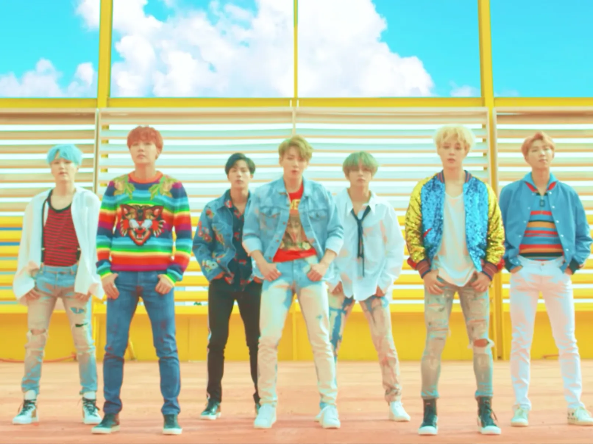
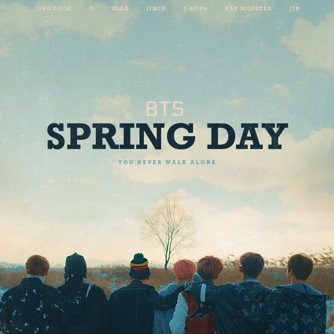

WE L♡VE BTS |
WE L♡VE BTS |
| Año | Álbum | Tipo |
|---|---|---|
| 2013 | 2 Cool 4 Skool | Single Album |
| 2014 | Skool Luv Affair | Mini Album |
| 2014 | Dark & Wild | Studio Album |
| 2015 | The Most Beautiful Moment in Life, Pt.1 | Mini Album |
| 2015 | The Most Beautiful Moment in Life, Pt.2 | Mini Album |
| 2016 | Wings | Studio Album |
| 2017 | You Never Walk Alone | Repackage |
| 2018 | Love Yourself: Tear | Studio Album |
| 2018 | Love Yourself: Answer | Compilation |
| 2019 | Map of the Soul: Persona | Mini Album |
| 2020 | Map of the Soul: 7 | Studio Album |
| 2020 | BE | Studio Album |

"SWIM" es el sencillo principal del décimo álbum de estudio de BTS, titulado Arirang, lanzado el 20 de marzo de 2026. La canción marca el regreso oficial del grupo tras completar su servicio militar obligatorio, presentando una propuesta visual y lírica cargada de metáforas sobre la resistencia, la evolución y la madurez.
12 de abril de 2019 «Boy with Luv» (en hangul, 작은 것들을 위한 시 ) es una canción grabada por la boy band surcoreana BTS, en colaboración con la cantante estadounidense Halsey.
"Fake Love" fue lanzado para descarga digital y streaming en varios países por Big Hit Entertainment el 18 de mayo de 2018, como el sencillo principal de Love Yourself: Tear .

«DNA» —en español: «ADN»— es un sencillo grabado por el grupo surcoreano BTS para su quinto miniálbum titulado Love Yourself: Her. La canción fue publicada por el sello Big Hit el 18 de septiembre de 2017 en Corea del Sur.

13 de febrero de 2017 «Spring Day» es una canción grabada por el grupo surcoreano BTS, lanzada el 13 de febrero de 2017 por Big Hit Entertainment, como sencillo principal del álbum You Never Walk Alone.

21 de mayo de 2021 « Butter » es una canción grabada por la banda surcoreana BTS . Fue lanzada como sencillo digital el 21 de mayo de 2021 a través de Big Hit Music y Sony Music Entertainment , siendo el segundo sencillo en inglés del grupo.